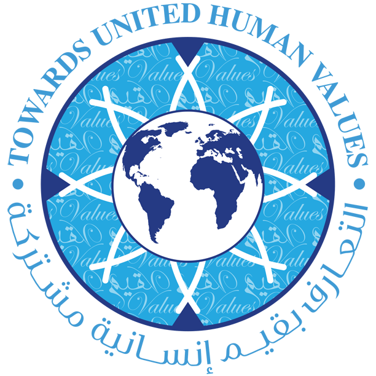

The Sultanate of Oman launched in 2019 a major initiative “Towards United Human Values” to promote religious tolerance, mutual understanding and peaceful coexistence.
The initiative, which is also known as the “Sultan Qaboos Declaration Project on United Human Values”, was launched by Oman’s Minister of Endowments and Religious Affairs Sheikh Abdullah Bin Mohammed Al Salmi at a celebration to mark the UNESCO’s International Day for Tolerance in Jakarta.

This initiative aims to spread the concepts of mutual understanding, religious tolerance and peaceful coexistence to foster human relations through this new initiative around the world.
The advisor to Oman’s Endowment and Religious Affairs Minister Dr. Mohammed Said Al-Mamari said in the launching ceremony:
“It is strategically well-placed to spearhead a new national drive for religious understanding. Geographically, Oman’s near neighbors include both Sunni and Shiite heartland. It is a short route to the world’s largest democracy and has historical trading roots that link the world’s most populous countries. For thousands of years, Omanis have traded in peace with other cultures.”
The Oman initiative is very timely given the present turmoil in the world, which emanated from hatred, terrorism and misinterpretation of teachings of various religions.
Oman’s initiative calls for transcendence over rhetoric by proposing a method of action for a balanced life, in which people live on the basis of dignity, fundamental rights and psychological security.

According to the Oman’s Ministry of Endowments and Religious Affairs; the sponsor of this initiative, there are three steps to reach this strategic target:
- The first step is to rebalance interests (different and confrontational between human beings) to achieve a universal agreement on the goals to improve people’s lives; to achieve a basic level of dignity and rights, and to preserve human cohesion against annihilation and extinction.
- The second step is to adopt a global system of ethics which promotes mutual understanding and peaceful coexistence, and to motivate people to unite in their efforts toward the protection of the environment. Religious, cultural and ideological differences do not prevent and are not an obstacle to our ability to share common ground and values.
- The third step focuses on the need to instill or revive spiritual values in mankind and reconcile them with the evolution of reason.
The intellect is all about honoring human beings, which calls on people to respect their mutual humanity and reject all forms of discrimination, extremism, violence and hatred.
Justice is about the balancing of basic human rights in soul, society and living and benefiting from it.
As far as ethics is concerned, it is the sum of human values, especially those of spiritual and philosophical dimension.
These three directives diverge from the natural classifications and differences between people such as religion, language and culture. But the focus is on the united values, which formed the core of this Omani initiative.

There is an urgent need for tolerance in our world. This Omani initiative helps to promote tolerance and achieve peace.

To explore our previous events, you are most welcome to visit this chronological presentations of some selected past global tolerance exhibitions Here ➤

We invite you also to visit our virtual exhibition online, while relaxing on your sofa. Please enjoy our virtual tour in your prefered language, with the most beautiful pictures, and the most authentic information about Islam, life, arts, tolerance of the Sultanate of Oman, in this wonderful journey Here ➤
Please visit our Virtual Global Exhibition in your preferred language